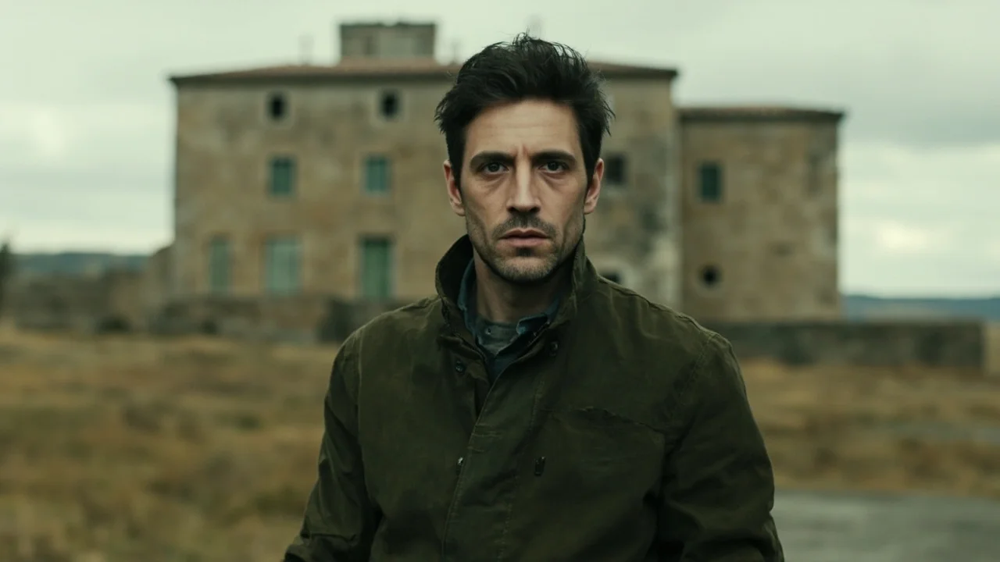
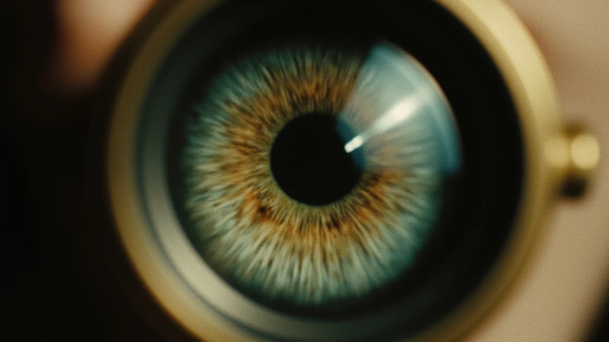
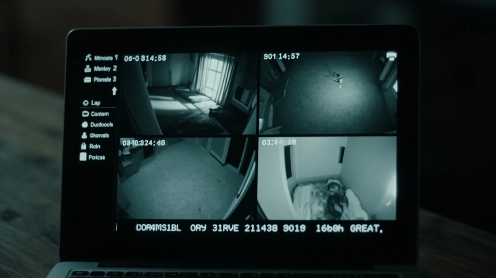
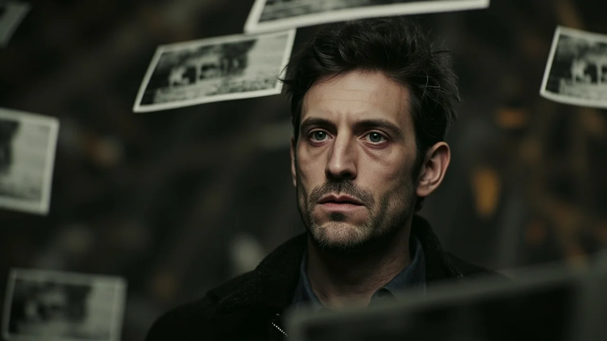
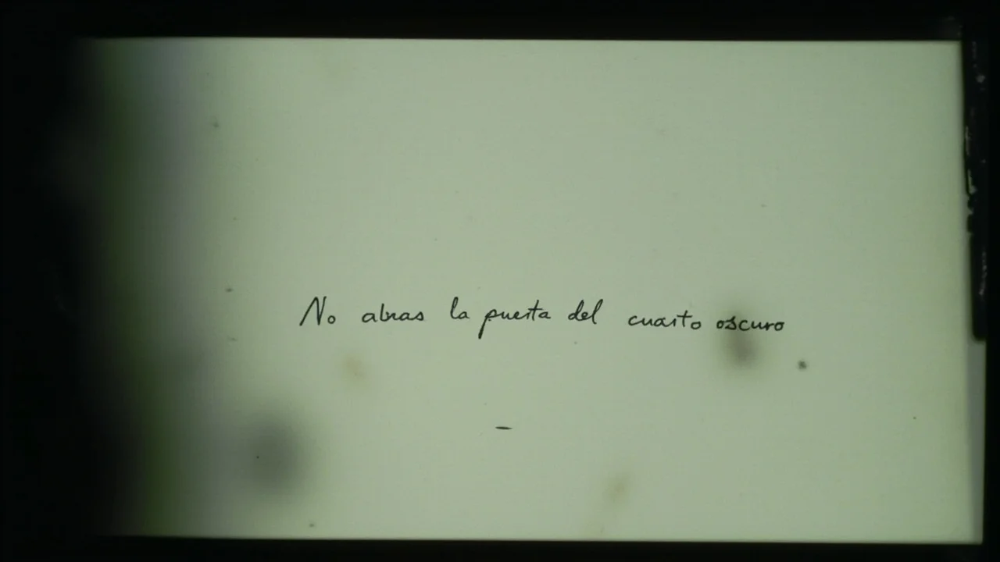

El caserón de Valdeolivas olía a polvo reseco, papel húmedo y vinagre, el olor del baño de paro que Iván llevaba quince años respirando en sus laboratorios. La casa llevaba más de cuatro décadas clausurada tras la desaparición repentina de Julián Vega, un fotógrafo que no dejó herederos. Iván había comprado la finca en subasta judicial, convencido de haber hallado el refugio ideal para aislarse del ruido urbano y montar su taller de gran formato.
La primera noche fue tranquila. El silencio del páramo solo era quebrado por el viento contra las tejas. Sin embargo, al bajar a la cocina a las siete de la mañana para calentar agua en el hornillo de gas, se detuvo frente a la mesa maciza de pino del comedor.
En el centro del tablero descansaba una copia fotográfica de dieciocho por veinticuatro centímetros, en blanco y negro, sobre papel baritado grueso. Estaba recién seca, con los bordes ligeramente curvados por la tensión de la gelatina.
Iván la tomó por los extremos. La imagen mostraba el pasillo superior con nitidez asombrosa: las baldosas hidráulicas, los zócalos de madera y la puerta entreabierta de su dormitorio. Lo perturbador era el encuadre. El tiro de cámara nacía a dos metros y medio de altura, justo en el ángulo donde convergían el tabique y la viga maestra. Era una perspectiva físicamente imposible: para situar una lente allí, la cámara tendría que haber estado empotrada en el interior del ladrillo macizo.
—Una broma de los tasadores —murmuró Iván, frotándose los ojos cansados—. Dejaron copias viejas entre las cajas.
Guardó la fotografía en una carpeta de cartón y continuó desembalando sus bultos.
Al día siguiente, a la misma hora, una segunda copia reposaba sobre la mesa.
Esta vez mostraba la cocina: el fregadero de piedra, la alacena y la cafetera de rosca sobre el hornillo. Iván sintió un cosquilleo gélido en el estómago: la cafetera aparecía girada a la izquierda, exactamente como él la había dejado la noche anterior tras cenar, y en el cristal de la ventana se reflejaba la luna llena que había cruzado el cielo de madrugada. Aquella foto no era un archivo antiguo; había sido tomada unas horas antes.
La tercera mañana, la fotografía sobre la mesa encuadraba el arranque de la escalera. En el tercer peldaño se apreciaba una mancha oscura y húmeda que no figuraba en la realidad. Iván subió corriendo y examinó la madera: el peldaño estaba seco. Sin embargo, a media tarde, mientras subía con un bidón de agua, la junta de goma de la garrafa cedió y derramó medio litro de líquido sobre el tercer escalón, dibujando sobre las tablas una mancha idéntica a la que la copia en papel había mostrado horas atrás.
El sudor le empapó la espalda. Tomó su cámara digital y comenzó a fotografiar cada rincón desde los mismos ángulos, anotando distancias focales y alturas de trípode. Ninguna óptica permitía replicar las perspectivas de las copias sin deformaciones evidentes.
Al cuarto día llamó a Marcos Roldán.

Marcos llegó al mediodía con su maletín de perito, un distanciómetro láser y los planos catastrales. Era un hombre pragmático, de hombros anchos y mirada escéptica, acostumbrado a resolver patologías de cimentación y medianerías.
—A ver esas fotos de las que hablabas —dijo Marcos, dejando su abrigo sobre una silla.
Iván extendió las tres copias sobre la mesa junto a su lupa cuentahílos. Marcos se inclinó sobre ellas, ajustándose las gafas de pasta. Observó el grano fino de la emulsión y el degradado de los tonos medios.
—Es papel baritado de alto gramaje, probablemente Ilford de los años setenta —dictaminó Marcos, frunciendo el ceño—. Pero el olor a ácido acético es fresco. Esto no tiene más de doce horas de secado. ¿Dónde tienes el laboratorio?
—No he montado ningún laboratorio —respondió Iván con voz tensa—. Los químicos siguen precintados en las cajas del zaguán. Alguien las deposita aquí mientras duermo.
Marcos encendió el distanciómetro láser y midió las cotas del corredor y el espesor de los muros.
—El tabique del pasillo tiene quince centímetros de ladrillo macizo con yeso por ambas caras —dijo Marcos, señalando la pantalla digital—. Detrás está el hueco de la chimenea vieja, sellado desde los años cincuenta. No hay cámaras de aire ni espacio para una cámara estenopeica. Es físicamente imposible disparar desde ahí.
—Pues alguien lo ha hecho —insistió Iván—. Y hay algo peor. Mira la tercera foto. La mancha del agua apareció horas después de que la foto estuviera sobre esta mesa.
Marcos lo miró con gravedad, quitándose las gafas para frotarse el puente de la nariz.
—Recoge tus cosas, Iván. Vente a mi piso en la ciudad un par de semanas. Estás pasando demasiado tiempo solo en este caserón helado y te estás obsesionando.
—No me voy a marchar —repuso Iván—. Voy a averiguar quién entra aquí.
Esa tarde, Iván instaló tres cerrojos suplementarios en las puertas exteriores, aseguró las contraventanas con pasadores de hierro y colocó cuatro cámaras digitales con sensor de movimiento en puntos estratégicos.

Se acostó a las once de la noche, vestido, con una linterna pesada bajo la almohada y una barra de hierro junto a la cama.
Durante horas, el silencio fue absoluto.
A las tres y catorce de la madrugada, un chasquido mecánico nítido, seco y metálico retumbó desde la planta baja: el golpe del obturador central de una cámara de medio formato, seguido por el avance lento de la manivela de arrastre.
*¡Clic-clac!*
Iván saltó del colchón empuñando la linterna. Bajó los peldaños de dos en dos, barriendo el zaguán con el haz de luz. Las cerraduras estaban intactas, con los pasadores echados por dentro. Las ventanas permanecían trancadas.
En el centro de la mesa del comedor descansaba una nueva copia fotográfica. Estaba húmeda al tacto, con restos de fijador escurriendo por los bordes.
Iván enfocó el papel. Se le cortó la respiración.
La fotografía mostraba su dormitorio en penumbra. En el centro aparecía él mismo, profundamente dormido bajo las mantas, con el brazo izquierdo colgando fuera de la cama. El ángulo de la toma nacía desde el interior más profundo del armario de dos puertas, encuadrando entre las perchas de madera.
Iván retrocedió, temblando. Antes de acostarse, él mismo había cerrado el armario con llave desde fuera para colgar su abrigo.
Corrió a su ordenador portátil para revisar las grabaciones de seguridad. Avanzó la línea de tiempo hasta las tres y catorce exactas. Al llegar al segundo cincuenta y ocho, todas las pantallas sufrieron un parpadeo simultáneo: durante tres segundos, las cámaras mostraron las habitaciones totalmente desiertas. Su propio dormitorio aparecía vacío, con la cama deshecha y sin nadie sobre el colchón, a pesar de que él sabía que en ese instante dormía allí dentro.
A las tres y quince con un segundo, la imagen volvió a mostrarlo durmiendo.
Preso del pánico, Iván no esperó al amanecer. Salió de la vivienda, cerró las puertas con todas las llaves y se refugió dentro de su furgoneta, aparcada a cincuenta metros sobre el camino de grava. Trancó las puertas del vehículo y vigiló el caserón hasta que los primeros rayos del sol disiparon la niebla.

A las siete y cuarto de la mañana, cuando decidió volver a por su equipo y marcharse definitivamente, abrió la puerta del copiloto para recoger su chaqueta.
Sobre el asiento del acompañante había otra fotografía en blanco y negro.
La furgoneta había estado cerrada herméticamente con él despierto en el interior durante las últimas cuatro horas.
Tomó la copia con manos temblorosas. La imagen mostraba una panorámica exterior del caserón tomada desde el robledal, exactamente desde donde su furgoneta había estado aparcada. Pero en la fotografía, todas las ventanas de la vivienda estaban iluminadas con un resplandor lívido, y detrás de los cristales de la segunda planta se recortaban varias figuras humanas inmóviles observando hacia afuera.
Sacó la lupa del bolsillo y enfocó la silueta del ventanal central.
A través del aumento óptico, las facciones cobraron nitidez: era él mismo. Su chaqueta verde oliva, su barba de dos días, sus ojos desorbitados clavados en el objetivo. Sin embargo, en el momento en que miraba la foto, él estaba de pie en el camino de grava, a la intemperie.
Le dio la vuelta al papel. En el reverso blanco, trazada a lápiz con un trazo fino, había una sola palabra escrita:
*«Mañana».*
La desesperación dio paso a una furia ciega. Iván no podía permitir que aquella aberración se apoderara de su vida. Sacó del maletero un mazo de demolición de cinco kilos y avanzó a grandes zancadas hacia la entrada principal.
—¡Sal de ahí dentro! —bramó hacia la fachada silenciosa—. ¡Sé que estás ahí, Vega!
Golpeó la cerradura con el mazo hasta reventar el marco y empujó la puerta hacia adentro.
Cruzó el umbral esperando ver el recibidor. Pero al atravesar la puerta, apareció de nuevo en el comedor. La mesa maciza de pino ocupaba el centro de la estancia, pero ahora no había una sola fotografía: todas las copias de los días anteriores estaban ordenadas en una fila geométrica perfecta sobre la madera, trazando una línea temporal cronológica.

Iván se giró para salir al exterior, pero la puerta de la calle daba de nuevo al mismo comedor. Probó con la puerta que conducía a la cocina: desembocaba en el comedor. Abrió la ventana para saltar al huerto: al otro lado del marco solo había otra perspectiva idéntica del comedor, con las sillas y la mesa reflejadas en un bucle infinito.
En el extremo final de la hilera de fotografías descansaba una última copia recién impresa, aún goteando fijador sobre el barniz.
Mostraba a Iván entrando por la puerta principal con el mazo en alto, la ropa salpicada de barro y el rostro desencajado por una mueca de puro horror que todavía no había terminado de experimentar.
Un sonido seco y continuo comenzó a resonar por las paredes:
*¡Clic-clac! ¡Clic-clac! ¡Clic-clac!*
El obturador se disparaba en todas las habitaciones simultáneamente, acelerando su cadencia como el latido de un corazón mecánico. Cada disparo expulsaba una nueva fotografía que caía planeando desde el techo hacia el suelo: Iván corriendo hacia el pasillo, Iván forcejeando contra un picaporte ciego, Iván golpeando el tabique con el mazo sin arrancarle ni una brizna de yeso. La casa no registraba el pasado; estaba revelando su futuro paso a paso, estrechando el cerco hasta dejarlo sin espacio físico en el presente.
En el fondo del vestíbulo, donde antes solo había un lienzo de pared enjalbegada, una puerta estrecha de madera vieja apareció entreabierta. De su interior manaba una débil luz roja de seguridad.
Iván arrojó el mazo al suelo y corrió hacia la abertura, creyendo haber encontrado una salida al exterior.
Al cruzar el marco, la puerta se cerró a su espalda con un chasquido sordo. El pestillo se deslizó solo.
La estancia era diminuta, fría y carecía de ventanas. Las paredes estaban forradas de madera oscura y de las vigas colgaban cientos de tiras de negativos, oscilando suavemente en la corriente gélida. Sobre las baldas descansaban bandejas de revelado esmaltadas en blanco, llenas de líquidos estancados que reflejaban la bombilla roja.
En las paredes había decenas de retratos enmarcados: hombres y mujeres de distintas épocas, todos sentados con la misma rigidez marmórea en distintas estancias de la vivienda. En uno de los marcos reconoció a Julián Vega, anciano y severo, con su traje de pana y sus ojos muertos fijos en la lente.
Y en el centro del laboratorio, colgada de una cuerda con una pinza de madera, secaba una última fotografía de gran formato.

Mostraba a Iván sentado ante una mesa de trabajo en aquel mismo cuarto oscuro, con una cámara telemétrica entre las manos, mirando al vacío con resignación eterna.
Iván bajó la vista. Sobre la pequeña banqueta de madera que tenía delante, una vieja cámara Voigtländer reposaba con el objetivo apuntando directamente hacia él.
El diafragma se abrió. El resorte del obturador saltó con un chasquido definitivo:
*¡Clic!*
La rendija inferior de la máquina expulsó lentamente una hoja de papel virgen que resbaló sobre la cubeta de revelador.
Bajo la tenue luz roja, la emulsión comenzó a reaccionar. Las sombras emergieron despacio entre las aguas químicas: el cuarto oscuro aparecía perfectamente nítido, con las bandejas, los negativos colgantes y la puerta entreabierta hacia el vacío. Pero en el encuadre ya no había nadie. Iván no estaba ante la cámara, ni en la banqueta, ni reflejado en los cristales.
Había desaparecido de la imagen. Y sin embargo, sus ojos continuaban viendo el cuarto desde la profundidad del papel.
Quince años más tarde, a finales de un otoño ventoso, un joven arquitecto municipal empujó la puerta desvencijada de Valdeolivas para tasar el inmueble antes del derribo definitivo de la finca.
El polvo cubría los suelos como una alfombra gris. Sobre la mesa de pino del comedor, solitaria y limpia, descansaba una única fotografía en blanco y negro.
El joven la levantó con curiosidad. Mostraba a un hombre de unos treinta y cinco años, con barba corta y chaqueta de lona verde, mirando fijamente hacia la cámara desde el interior de una habitación sin ventanas, con una expresión de advertencia infinita en la mirada.
En el reverso de la copia, trazada con una caligrafía temblorosa en tinta negra ya desvaída, había una frase escrita a mano:
*«No abras la puerta del cuarto oscuro».*